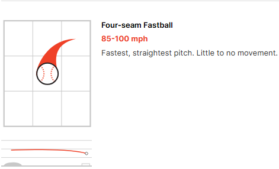
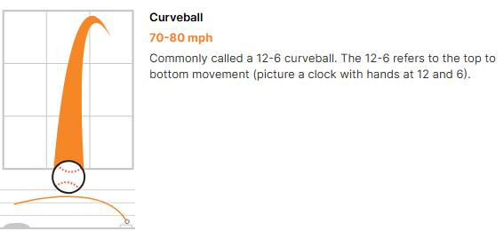

A fastball is a type of pitch that is typically thrown overhand and placed on the seams in such a way that allows for pitchers to implement as much backspin as possible so that it does a better job of fighting gravity due to the magnus effect. Higher spin and higher velocity fastballs have less vertical break and are harder to hit.
The curveball is a secondary pitch type made to combo incredibly well with a fastball. Out of the hand it looks like a fastball but since it is thrown with forward spin, it dives to the ground much faster than a fastball and is made to get swings and misses. The act of playing a curveball of off a fastball's path is called pitch tunneling, since they look very similar for a large chunk of the way to the plate and then change their trajectory depending on the pitch.
| Player | Fastball Velo | Curveball Velo | bWAR(wins above replacement) |
|---|---|---|---|
| Justin Verlander | 93.8 | 77.8 | 81.4 |
| Tyler Glasnow | 96.3 | 84.5 | 8.7 |
| Zac Gallen | 92.8 | 80.4 | 18.1 |
Links to the information and images used: